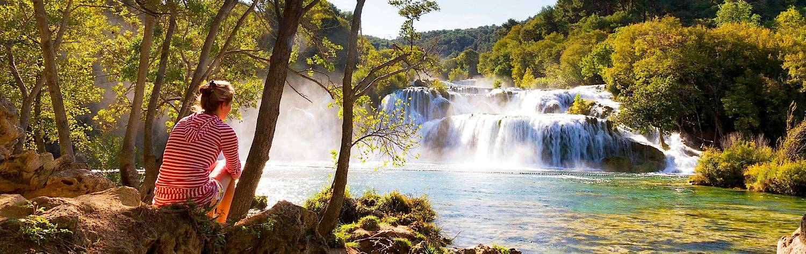

Croatia's tones are warm and rich; the colors of summer cascade all year round.
The eye wanders across monochromic orange roof tiles to untrammeled beaches, on wards
to benevolent waters and along to forests of pine. Each initial panorama is a postcard,
a frame of Mediterranean bliss tucked into a blossoming corner of Eastern Europe.
But ravishing as she may be, Croatia's allure is not merely one of aesthetics.
Sentiments of old-world charm are inescapable, whether you're sipping fruit wine at
waterfront restaurants, lounging in World Heritage towns, or feeling soft sand beneath
bare feet. A quaint mystery radiates throughout, tumbling down from hilltop ruins to
cobblestone Venetian streets. While Croatia has blossomed as a modern nation within the
European Union, it retains an atmosphere of exoticism.
A thousand tales of Croatian history are etched into the old walled towns that dot
the coast. These start in ancient Rome and continue through four centuries of Venetian rule.
More recently, Croatia has the flavors of Ottoman elegance and the remnants of its part in
former Yugoslavia. Consistent throughout these chronicles is Croatia's role as an up-market
tourist destination. Ever since Roman emperors and star-crossed Venetian lovers escaped here,
the country has always rewarded indulgent tastes and aspirations for exclusivity; untrammeled
Dalmatian islands offer a getaway beneath balmy skies, forest walkways open onto veiled
waterfalls, private yachts lull in deserted bays, and boutique guesthouse terraces gaze
down on 14th century stone staircases. An atmosphere of splendor wraps everything in a
blanket of romance, the panoramas soft on the eyes and the destinations reveling in impressions
of escapism.
Inimitability is rooted in the country's rich history and geographical location.
Croatia is a centerpiece of paradigms; its expressive identity is a blur of Mediterranean
reverie, ancient Europe, and Eastern elegance. Then there's a kaleidoscope of distinct local
flavors that have flourished since the country's independence in 1991. And while the luxury
treatment may suggest otherwise, this is still an emerging and relatively undiscovered tourist
destination. You get the intrepid feeling of exploring somewhere new, with the reassuring ease
of being in modern Europe. Croatia stands in the top echelons of enchanting world destinations;
except it remains off most radars. Here is an opportunity to immerse yourself in somewhere
delectably unspoiled:
1.The historic grandeur of Dubrovnik:The grandest of the country's ancient
walled cities, World Heritage Dubrovnik, towers over sapphire waters with its streets of
eternal seduction. Fortressed walls look down on sloped tiles, boutiques emerge down softly
illuminated alleys, and city squares are wrapped in the chatter from al fresco terraces.
Fully pedestrianized and carefully preserved, Dubrovnik is a 15th century Adriatic wonder
that few people want to leave.
2.Sailing the Adriatic in a private yacht:Cruising Mediterranean waters in a
private yacht is one of Europe's most iconic experiences. Historic wooden vessels offer the
elegance of sailing, your yacht propelled by wind power as an evocative coastline gently
rolls past. Modern motorized yachts cruise at a faster speed, allowing you to tour all the
eclectic treasures of Croatia's Adriatic coastline. In recent years, Croatia has emerged as
Europe's premier destination for private sailing trips, the coastline offering dozens of
potential routes; dock in secluded bays, explore tiny coastal villages, and snorkel below
the sheets of turquoise.
3.The splendor of Plitvice Lakes:Cascading through lush forests, the Plitvice Lakes
are a symbol of Croatia's inland beauty. A series of wooden walkways and platforms take you
through the park, running alongside limestone formations, transparent rivers, and mystically
cloaked waterfalls. Hemmed in by green, Plitvice is an explosion of grace and color. It's just
one of many Croatian national parks.
